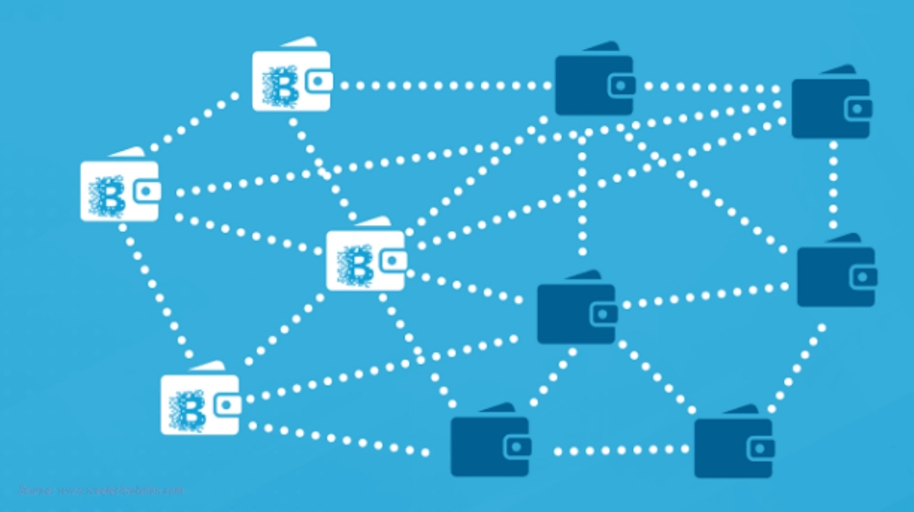

Why is Blockchain Popular?
Suppose you are transferring money to your family or friends from your bank account.
You would log in to online banking and transfer the amount to the other person using
their account number. When the transaction is done, your bank updates the transaction
records. It seems simple enough, right? There is a potential issue which most of us
neglect.
These types of transactions can be tampered with very quickly. People who are familiar
with this truth are often wary of using these types of transactions, hence the evolution of
third-party payment applications in recent years. But this vulnerability is essentially why
Blockchain technology was created.
It is programmable and can generate systematic actions, events, and payments automatically
when the criteria of the trigger are met.
